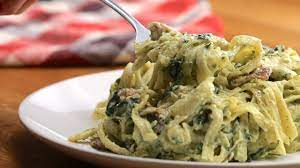

cream pasta chicken pesto
Descripción
This is an Italian recipe where we mix a pesto-type sauce with a protein that in this case is chicken with a white
sauce that can be called a cream that can be bechamel or a heavy cream.

Ingredientes
- pasta
- chicken
- basil
- Parmesan
- olive oil
- peanut
- milk cream
- salt
- pepper
- paprika powder
pasos
- Place the basil, olive oil, peanuts and Parmesan cheese in a mortar and grind slowly to make an oil-based sauce.
- Chop the chicken into cubes and then season it with salt, pepper and paprika powder and then cook it
- cocinar el la pasta en suficiente agua con sal (no se le agregar aceite para pegar la salsa)
- When the pasta is ready, in the same pan where you made the chicken, place 2 or 3 tablespoons of heavy cream and
then, after 1 minute, place the chicken and immediately add the pesto sauce that was prepared at the beginning of
the recipe.
- Finally we add the pasta to stir everything and serve with a little more parmesan cheese.